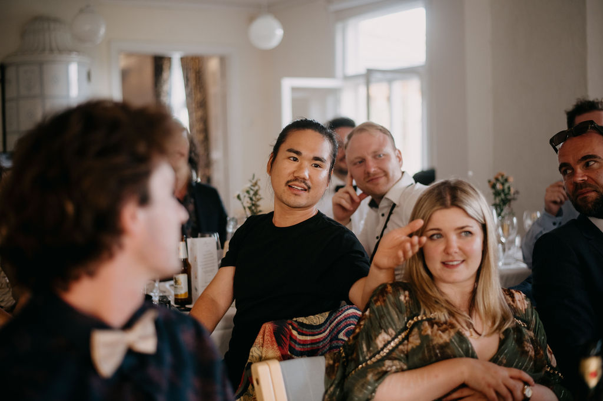

"Trung's session helped me sharpen my understanding of my ICP and where to start focusing my writing efforts. The relaxed, conversational format made it easy to open up and walk away with practical insights I can apply immediately."
Back to Home
Clear the Roadblocks to Your Greatest Work
Founder coaching that helps high-achievers overcome emotional barriers—so you can do the hard things you're meant for, without burning out or losing yourself in the process.
Limited Spots
Application Required
100% Confidential
Add a photo of you coaching a client
Is This You?
You're a high-achieving founder who's built something impressive, but you're hitting emotional walls that technical skills can't solve
You're struggling with imposter syndrome, decision paralysis, or perfectionism that's keeping you from your next level
You want to scale your impact without sacrificing your wellbeing or compromising your values
You're seeking a trusted guide who's walked the founder path and can help you navigate its emotional complexities
The Process
1
Discovery Call
A 30-minute conversation to understand your unique challenges, goals, and whether we're the right fit for each other. No pressure, no obligations—just honest exploration.
2
Deep Dive Session
A 90-minute intensive where we map your emotional landscape, identify core patterns, and create a personalized roadmap for transformation. You'll leave with immediate action steps.
3
Ongoing Support
Bi-weekly 60-minute sessions focused on implementation, accountability, and navigating challenges as they arise. Plus, unlimited Telegram access for time-sensitive situations.
Transformations
"I really appreciate the format because it creates meaningful connections with people who are facing similar challenges. You can feel everyone's motivation to work on their goals, and the trust we've built makes these sessions truly valuable."
"We're not in this journey alone. Everyone faces their own challenges, and knowing that others are working towards their goals makes the burden feel lighter. I appreciate how supportive we are, sharing our perspectives and decision-making processes."
"My coaching is 100% confidential. These testimonials are shared with explicit permission."
Investment
3-Month Intensive
$9,000USD
90-minute deep dive session
6 bi-weekly 60-minute coaching sessions
Unlimited Telegram access
Personalized resources and exercises
Payment plans available. Only 3 spots open each month.
Money-Back Guarantee
If after our first two sessions you don't feel this is the right fit, I'll refund your investment in full. No questions asked. I only want to work with founders I can truly help.
FAQ
How is this different from other coaching?
Most coaching focuses on strategies and tactics. I focus on the emotional barriers preventing you from implementing what you already know. As a founder myself, I understand the unique pressures you face and bring both technical expertise and emotional intelligence to our work.
How do I know if I'm ready for this?
You're ready if you've hit a ceiling in your growth that more knowledge or harder work can't break through. If you're sensing that the next level requires internal transformation, not just external strategies, this work is for you.
What results can I expect?
Clients typically experience clearer decision-making, reduced anxiety, improved leadership presence, better boundaries, and the ability to take bold action without the paralysis of perfectionism or imposter syndrome.
Is this therapy?
No. While our work addresses emotional patterns, it's focused specifically on your growth as a founder and leader. I'm not a therapist, and this isn't a substitute for mental health treatment if that's what you need.
Get Started

Ready to break through your emotional roadblocks and do your greatest work? Let's start with a free discovery call to explore how we might work together.